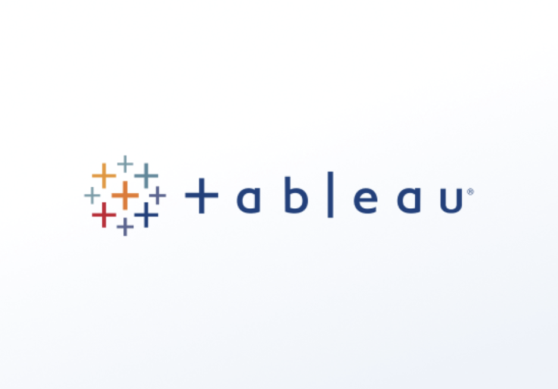

SQL, Tableau, Slides
In this case study, I analyze data from a Chicago based bike share company in order to identify trends in how their customers use bikes differently.
This includes a full report where I followed the data analysis process: ask, prepare, process, analyze, share, and act.
You will also find a Tableau dashboard and a presentation for the stakeholders that summarize my findings.
I combined and cleaned Tessa's Coffee sales data to include all the customer, product, and order information. I then analyzed it by using pivot tables to discover trends and patterns in the sales. I finalized the project by creating an interactive dashboard that clearly displays the data.
I combined and cleaned Tessa's Coffee sales data to include all the customer, product, and order information. I then analyzed it by using pivot tables to discover trends and patterns in the sales. I finalized the project by creating an interactive dashboard that clearly displays the data.

These are the visualizations I've created using Tableau.